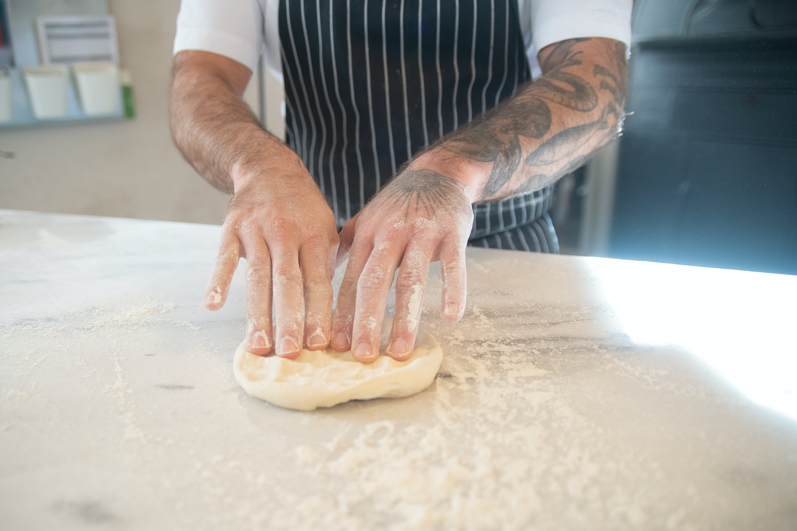

Basic pizza Dough

Basic pizza Dough
A quick pizza base dough for when you want pizza in a hurry.
ingredients:
- 400g plain flour, plus extra to dust.
- 1 x 7g sachet fast action dried yeast.
- 1 tsp fine sea salt.
- 1 tsp caster sugar.
- 2 tbsp olive oil, plus extra to drizzle.
- 1 tbsp cornmeal, polenta or semolina, to roll out
Steps:
- Preheat the oven to the hottest it will go (around 240°C, fan 220°C, gas 9), before starting to make the dough. Put in a couple of pizza stones, or 2 large baking trays, to get really hot.
- Mix the flour, yeast, salt and sugar together in a mixing bowl. Make a well in the centre and add the oil, then add about 225ml water to bring together as a dough. Tip out onto a floured surface and knead for 1 minute, just until smooth. Leave to rest under the upturned bowl while you prepare your pizza toppings.
- t’s time to shape the pizzas! Roll out one ball at a time on a lightly floured surface, to about 25cm in diameter. Sprinkle a large square of baking paper with the cornmeal (or alternative) then lift the dough onto the paper. Stretch and press the pizza dough with your fingertips until it is about 30cm diameter, indenting a thicker crust around the edges. The middle should be about 5mm, and the crust about 1cm deep. Repeat to make a second pizza.
- Spread the pizzas with sauce and add your toppings (don’t add too many, or you’ll end up with a soggy pizza). Drizzle with a little oil and leave to rest for 10-15 minutes before baking, so that the dough starts to rise. Slide the pizzas onto the preheated pizza stones or hot baking trays, still on the lining paper to help lift them easily. Bake for 10-15 minutes until the base is golden and crisp.